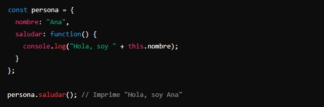
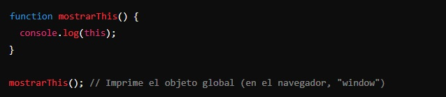
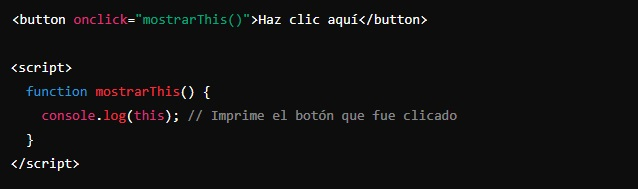
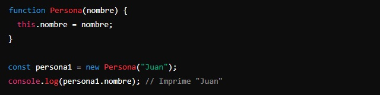

La palabra clave "this" se usa para referirse al objeto que está dentro de la función que se está ejecutando. Dependiendo del contexto, "this" puede significar diferentes cosas, dependiendo de dónde y cómo se usa. Vamos a ver las distintas formas de usarlo para aclararlo.
- Dentro de un objeto:
Cuando "this" se usa dentro de un método de un objeto, se refiere a ese objeto.
Ejemplo:
Aquí, "this.nombre" se refiere al objeto persona.
- En una función global:
Cuando "this" se usa dentro de una función, fuera de cualquier objeto, se refiere al objeto global.
Ejemplo:

- En un evento de un elemento HTML:
Cuando "this" se usa en una función que responde a un evento, se refiere al elemento HTML que recibió el evento.
Ejemplo:

- En una función constructora:
Cuando se usa "this" en una función que crea objetos (una constructora), se refiere a la nueva instancia del objeto que se está creando.
Ejemplo:
